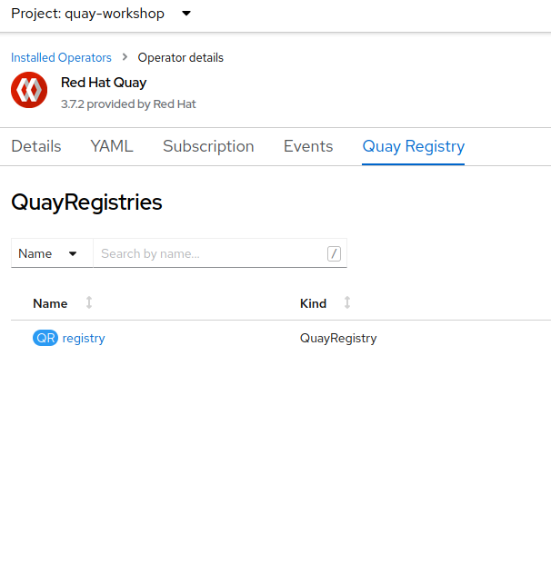
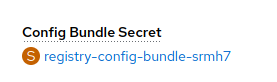
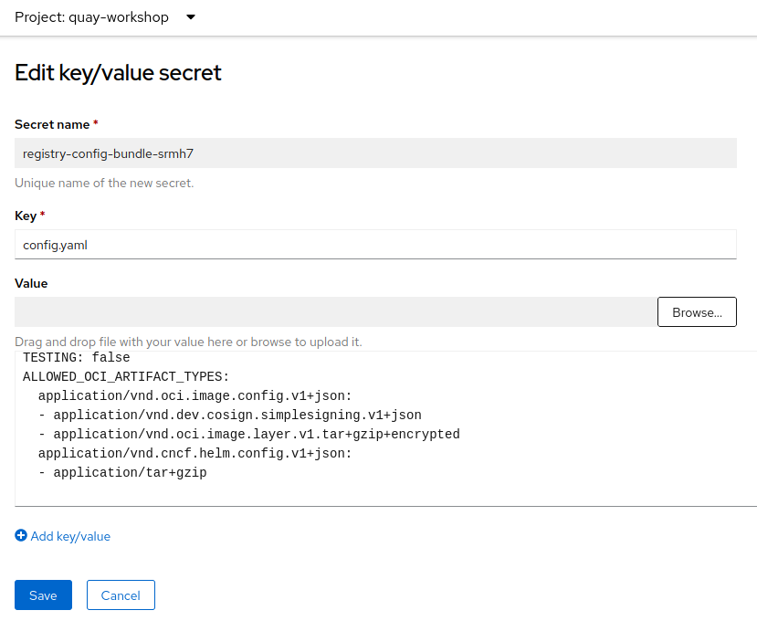
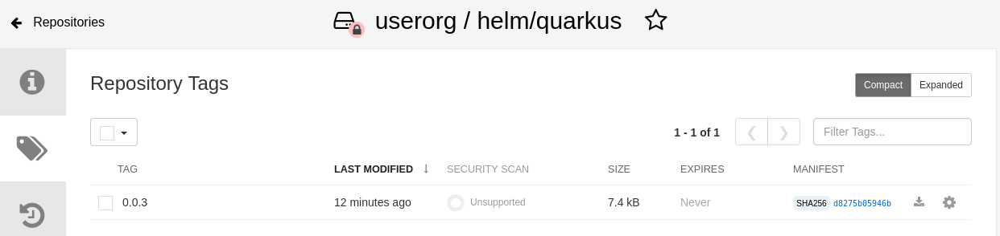
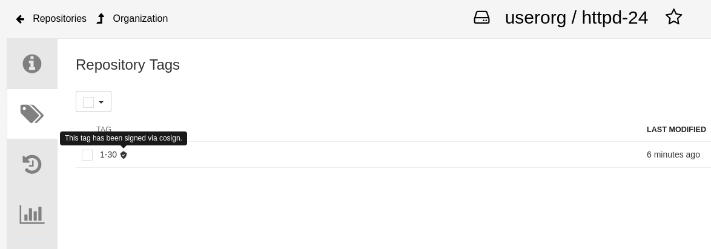

Quay OCI-based Artifacts Repository
Quay can be used to store OCI-based artifacts like Helm charts, encrypted container images, signed images, zstd compressed images, etc.
Configuring allowed OCI artifact types
Some of the oci artifats that we are going to use on the next sections are not allowed by default. For example, the Helm charts and signed images are allowed by default, but the encrypted container images not (at least at the time of this writing). Follow this step if you want to upload encrypted images to Quay.
As a previous step, we are going to configure the ALLOWED_OCI_ARTIFACT_TYPES environment variable for allowing some of the oci artifacts that we will use soon.
-
Open a browser window and log in to the OpenShift Container Platform web console.
-
Click Operators → Installed Operators.
-
Select
quay-workshopas the project and click onQuay Registry. Click to ourregistry.

-
Click on the
Config Bundle Secretsecret (registry-config-bundle-*).

-
In the
Actionsdrop down, selectEdit Secret. -
Add the following into the
Valuetext field. And clickSave.
ALLOWED_OCI_ARTIFACT_TYPES:
application/vnd.oci.image.config.v1+json:
- application/vnd.dev.cosign.simplesigning.v1+json
- application/vnd.oci.image.layer.v1.tar+gzip+encrypted
application/vnd.cncf.helm.config.v1+json:
- application/tar+gzip
The registry-quay-config-editor- and registry-quay-app- pods will be restarted automatically with the new configuration.
Helm charts
-
Login to Quay registry with helm.
helm registry login <QUAY_HOSTNAME>-
Pull a chart.
-
Push the chart into Quay repository.
helm push quarkus-0.0.3.tgz oci://<QUAY_HOSTNAME>/userorg/helm-
Open the Quay Dashboard and open the
userorg/helm/quarkusand go toTags.

The Helm chart is published to Quay as an OCI image.
-
The Helm chart can be installed directly from the repository.
helm install quarkus oci://<QUAY_HOSTNAME>/userorg/helm/quarkus --version=0.0.3Signed container images
Image signing ensures the integrity of our image deployments. Quay will store the signature as an OCI artifact.
-
Download cosign and set execution permissions.
curl https://github.com/sigstore/cosign/releases/download/v1.9.0/cosign-linux-amd64 -L -o cosign
chmod +x cosign-
Generate the key pair.
./cosign generate-key-pair-
Sign an image and pull it to Quay.
# Pull the image
podman pull registry.redhat.io/rhel8/httpd-24:1-30
# Tag and push the image
podman tag registry.redhat.io/rhel8/httpd-24:1-30 <QUAY_HOSTNAME>/userorg/httpd-24:1-30
podman push <QUAY_HOSTNAME>/userorg/httpd-24:1-30
# Login
# If we already signed in with podman or docker, the password parameter is not required, as it will use config.json file
./cosign login <QUAY_HOSTNAME> -u <USER> -p <PASSWORD>
# Sign and push the signature
./cosign sign --key cosign.key <QUAY_HOSTNAME>/userorg/httpd-24:1-30-
Navigate to the Quay Registry Dashboard,
userorg/httpd-24repository. -
Click
Tags.
We will see our signature stored in it.

Encrypted container images
An image can be encrypted with a key or multiple keys. Also, we can encrypt the full image layers or some specific layer instead; also, we can encrypt all image layers or only some layer. In any case, we can store the container image into Quay.
The encrypted images are used when we want to protect private and sensitive content from our images, for example, in case of our registry is compromised.
Usually the image decrypting key is stored in a secret into our OCP cluster master node.
Encrypted container images with JSON Web Encryption (JWE) (RFC7516)
-
Generate the encryption RSA keys with openssl.
# private key
openssl genrsa --out /tmp/private-key.pem 2048
# public key
openssl rsa -in /tmp/private-key.pem -pubout -out /tmp/public-key.pem-
Copy the image that we want to encrypt.
skopeo copy docker://quay.io/centos7/httpd-24-centos7:latest oci:/tmp/local-httpd24:latest-
Encrypt the image.
skopeo copy --encryption-key jwe:/tmp/public-key.pem oci:/tmp/local-httpd24:latest oci:/tmp/local-httpd24-encrypted:latest-
Push the image to Quay.
skopeo copy oci:/tmp/local-httpd24-encrypted:latest docker://<QUAY_HOSTNAME>/userorg/httpd-24-encrypted:latest-
Navigate to the Quay Registry Dashboard,
userorg/httpd-24repository. -
Click
Tags.
We will see our encrypted image stored in it.
Encrypted container images with PGP (RFC4880)
-
Generate the PGP keys.
gpg --full-generate-key
<..>
Real name: Angel
Email address: angel@olleb.com
Comment:
You selected this USER-ID:
"Angel <angel@olleb.com>"
<..>-
Copy the image that we want to encrypt.
skopeo copy docker://quay.io/centos7/httpd-24-centos7:latest oci:/tmp/local-httpd24:latest-
Encrypt the image.
skopeo copy --encryption-key pgp:angel@olleb.com oci:/tmp/local-httpd24:latest oci:/tmp/local-httpd24-encrypted:latest-
Push the image to Quay.
skopeo copy oci:/tmp/local-httpd24-encrypted:latest docker://<QUAY_HOSTNAME>/userorg/httpd-24-encrypted:latest-
Navigate to the Quay Registry Dashboard,
userorg/httpd-24repository. -
Click
Tags.
We will see our encrypted image stored in it.